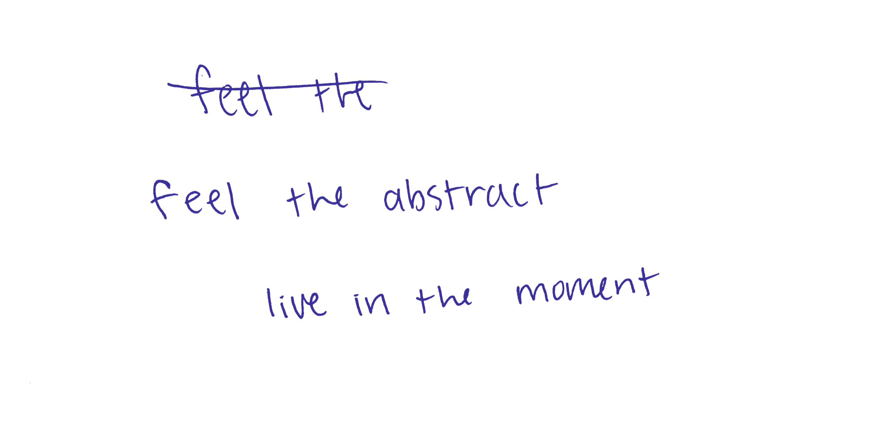
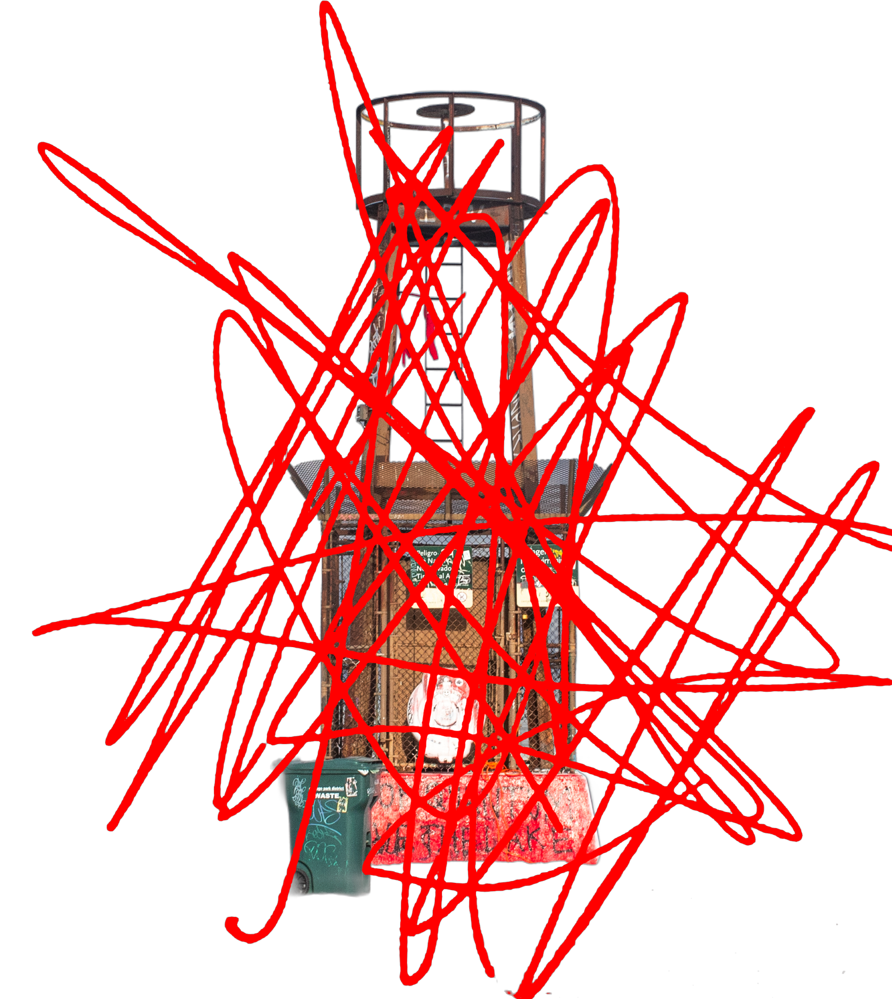
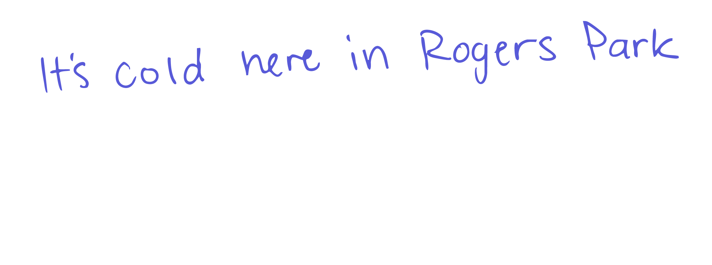

This is a little photo-journal I put together over a long Chicago winter, when the cold in Rogers Park started feeling more emotional than physical.
Through photos and handwritten notes, I tried to hold onto the quiet, easy-to-miss, lonely moments — and the unexpected bits of beauty I kept finding in such a harsh season.


